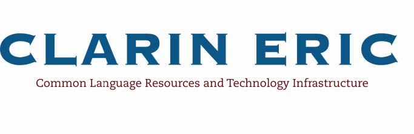

|
Jobs
 KU Leuven invites applications for a full-time tenured academic position in Computer Science for Digital Humanities at the Department of Computer Science. KU Leuven invites applications for a full-time tenured academic position in Computer Science for Digital Humanities at the Department of Computer Science.
Research:
KU Leuven is looking for a candidate with expertise in applications of computer science in digital humanities. A successful candidate will already have obtained excellent research results in the area of applying computer science techniques in research applications in the digital humanities. For the applied computer science techniques, examples could be data mining, or archiving or disclosure of information from large e-archives, or human-computer interaction, or visualisation techniques, or e-learning.
Concerning the applications domains, examples could be the Arts, or the Social or Instructional Sciences. Research experience with the application of multiple techniques from computer Science and/or with multiple application domains in the Humanities or Behavioral Sciences are considered are a strong added value of the application.
Teaching:
The selected applicant will take on teaching responsibilities in various study programs, in particular for courses on basic computer science techniques for students in the humanities. Apart from this, the applicant will also be asked to teach an advanced course on applications, related to his/her research, in digital humanities. Possibly, the accepted applicant can be asked to teach courses in the Master/Bachelor Computer Science and/or the Master/Bachelor in (Applied) Informatics. Together with an existing team, the successful applicant will further develop courses related to digital humanities. The applicant needs to engage in setting up an interdisciplinary cooperation, both in teaching and in research, on digital humanities.
Offer:
The full-time position can be offered in one of the academic levels (full professor, professor, associate professor, assistant professor), depending on the qualifications of the candidate.
Please visit the application webpage for further information http://icts.kuleuven.be/apps/jobsite/vacatures/52409066?lang=en
The Cologne Centre for eHumanities is offering a W1 professorship in Digital Humanities. Applicants are expected to have experience in: - Application of methods of information technology in more than one humanities subject.
- Development and adaptation of software environments and software tools.
- Specific and interdisciplinary research methods in the humanities.
- Familiarity with the international research community of digital humanities.
- Implementation of research projects.
- Teaching in the digital humanities.
Application deadline: 30 April 2013 Further information are available under http://www.cceh.uni-koeln.de/node/51 (in German language)
Wednesday, 20 February 2013
In the past ten years, the Department has established the Digital Humanities with foci in English Corpus and Computational Linguistics as well as German Computer Philology. Throughout this period, the Department has consolidated its position in the digital humanities through internationally networked research activities and the installation of a bilingual Master of Arts program Linguistic and Literary Computing. The specific profile of Digital Humanities as Digital Philologies is going receive further impetus by the installation of a cluster of three professorships representing this discipline. Together with the already existing professorship for German Computational Philology (Andrea Rapp), the two new professorships will form a philology-based cluster of Digital Humanities at TU Darmstadt:
- W3 Linguistics with a focus on corpus and computational linguistics, and
- W2 Literary Studies and Cultural Studies with a focus on Digital Literary Studies / Digital Cultural Studies.
Wednesday, 06 February 2013
The CLARIN European Research Infrastructure Consortium (CLARIN ERIC) has an opening for the part-time position (20% fte) of CLARIN ERIC Director for User Involvement. The chief responsibility of this position is to stimulate, facilitate and coordinate the use of the CLARIN infrastructure, its language resources, and its language services by scholars in the Humanities and Social Sciences on a European scale. For further details please read this document. The application deadline is 01 March 2013.
|
 The Department of Digital Humanities at King's College London is looking for a highly motivated and technically sophisticated individual to join the research and development team. The position will involve data modelling and analysis, plus the design and development of both editorial and administrative tools and public facing web applications, for the second phase of the Gascon Rolls (1317-1468) project, currently being carried out in collaboration with the University of Bordeaux in France. The focus of the work will be on the exploration of historical/technical issues in adapting historical data to wider digital frameworks, the application of geospatial and data mining approaches, new modes of visualisation and multi-device publishing, and the development of a French interface for the project. Closing date for applications is 12 February 2013. For vacancy details please visit http://www.kcl.ac.uk/depsta/pertra/vacancy/external/pers_detail.php?jobindex=12763
Thursday, 06 December 2012
King´s College London, Department of Digital Humanities, Centre for e-Research (CeRch) is seeking a Research Developer in dynamic web development including implementation of front-end interfaces. The Researcher will work across two major European Commission funded research infrastructure projects: the European Holocaust Research Infrastructure (EHRI) (www.ehri-project.eu) and Data Service Infrastructure for the Social Sciences and the Humanities (Dasish) (www.dasish.eu) projects. Her/his role will be to analyse research practices and translate and implement these in a Virtual Research Environment and research registries.
The closing date for receipt of applications is 28th December 2012.
For further information please visit the website (www.jobs.ac.uk/job/AFQ273/research-developer).
The Max Planck Institute for the History of Science in Berlin, Department II (Lorraine Daston), announces two postdoctoral fellowships for up to two years, starting date September 1, 2013. Outstanding junior scholars are invited to apply.
The fellowship will be awarded in conjunction with the following two Working Group research projects:
Historicizing Big Data: http://www.mpiwg-berlin.mpg.de/projects/projects/DeptII_Aronova_Oertzen_Sepkoski_Historicizing
Science in Circulation: http://www.mpiwg-berlin.mpg.de/en/research/projects/DeptII_Science_in_Circulation/index_html
Candidates should hold a doctorate in the history of science or a related field at the time the fellowship begins; the Ph.D. degree should have been awarded in 2010 or later.
The Max Planck Institute for the History of Science is an international and interdisciplinary research institute (website). It is expected that candidates will be able to present their own work and discuss that of others fluently in English. Applications may however be submitted in German, English, or French.
 Trinity College Dublin is recruiting for a Software Engineer for the Digital Repository of Ireland. • Post Status: Contract up to up to 31st August, 2015 • Post Summary: Developing and deploying advanced IT systems as part of the Digital Repository Ireland (DRI) • Department/Faculty: High Performance & Research Computing, ISS • Location: Lloyd Building, Main Campus, Trinity College Dublin • Salary: This post will be made on the Administrative Officer 3/2 in line with current Government Pay Policy • Closing Date: 12 Noon on Friday 5th October, 2012 Application details are available at the link below. More details are available at http://www.tchpc.tcd.ie/node/1077 .
|
|
|
|
|
|
Page 1 of 3 |
|
Information brochure

Download PDF 
|